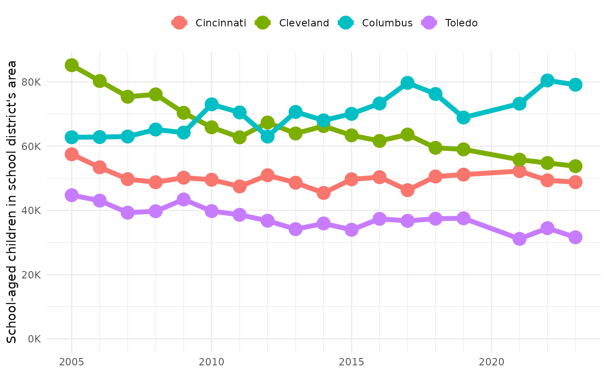
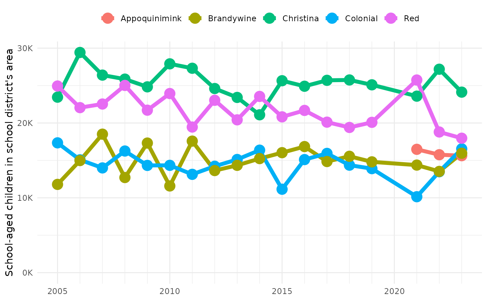

Population changes in school districts
population_changes_in_school_districts.RmdHow have populations changed in Ohio’s four largest school districts?
To answer this with hercacstables, you should break it
down into four component questions.
Who?
What population or populations are you trying to understand? This will help us identify the groups and variables that we will specifically ask for.
All of those groups and values can be accessed offline with
hercacstables::METADATA_FOR_ACS_GROUPS and
hercacstables::METADATA_FOR_ACS_VARIABLES.
We want to know about populations in school districts. It makes sense
then to only look at school-aged children, say 5-18. Our requests should
only ask for data about kids in that age range. We can do this with the
built-in table hercacstables::GLOSSARY_OF_AGE_AND_SEX.
school_children_glossary <- hercacstables::GLOSSARY_OF_AGE_AND_SEX |>
dplyr::filter(
.data$`Lower Age` >= 5,
.data$`Upper Age` <= 18
)
knitr::kable(school_children_glossary)| group | index | variable | Sex | Lower Age | Upper Age |
|---|---|---|---|---|---|
| B01001 | 4 | B01001_004E | Male | 5 | 9 |
| B01001 | 5 | B01001_005E | Male | 10 | 14 |
| B01001 | 6 | B01001_006E | Male | 15 | 17 |
| B01001 | 28 | B01001_028E | Female | 5 | 9 |
| B01001 | 29 | B01001_029E | Female | 10 | 14 |
| B01001 | 30 | B01001_030E | Female | 15 | 17 |
From this table we can see that we will need to include six variables in our API query.
SCHOOL_CHILDREN_VARIABLES <- school_children_glossary$variable
print(SCHOOL_CHILDREN_VARIABLES)
#> [1] "B01001_004E" "B01001_005E" "B01001_006E" "B01001_028E" "B01001_029E"
#> [6] "B01001_030E"Where?
What kind of place, and specific location, should the data describe?
The Census API can provide information at many levels
of geographical detail. Some questions might pertain to entire
states. Others might involve comparisons among all of the tracts in a
metropolitan area. You can find details about the different geographic
levels in hercacstables::METADATA_FOR_ACS_GEOGRAPHIES. If
you know the real-world name of a place, but not the numeric code that
the Census uses for it, then you can look it up here.
For the question that we’re dealing with, we want to look at the geographic area served by a school district. There are actually three different kinds of school district geographic levels.
school_district_geographies <- hercacstables::METADATA_FOR_ACS_GEOGRAPHIES |>
dplyr::filter(stringr::str_detect(.data$`Geographic Level`, "school"))
school_district_geographies |>
knitr::kable()| Geographic Level | Containing Geographies | Wildcard Option | ACS1 | ACS5 |
|---|---|---|---|---|
| school district (elementary) | {state} | {state} | 2023-01-01 | 2023-01-01 |
| school district (secondary) | {state} | {state} | 2023-01-01 | 2023-01-01 |
| school district (unified) | {state} | {state} | 2023-01-01 | 2023-01-01 |
It looks like the specific geographic level that we should ask about is “school districts (unified)”.
The “Containing Geographies” column lets us know that we also have to tell the API which state we are interested in. The “Wildcard Option” column tells us that we can use “*” to say “all of the states.”
We just want Ohio, so we must supply its FIPS code. If you don’t know it off the top of your head, you can use a page on the Census’s website to search for the FIPS code of a specific geography.
Ohio’s FIPS code is 39.
UNIFIED_SCHOOL_DISTRICT <- school_district_geographies$`Geographic Level`[3]
print(UNIFIED_SCHOOL_DISTRICT)
#> [1] "school district (unified)"
STATE_FIPS <- 39When?
A request to the Census API must include year its path. That means
that it takes multiple API calls to pull data for multiple years. Each
of these calls will be identical to the others, except for the
year in the path. This repetitiveness might just be the single biggest
motivator for developing hercacstables. It’s very easy in R
to iterate over an array of years, making one function call for each
year, and then bundling all of the results into one tidy data frame.
The other aspect of the “when” question is whether or not to use 1-year or 5-year estimates. The ACS reports both. Five-year estimates include data from the preceding four years. This increases sample sizes enough to provide information for smaller geographic levels, like tracts and block groups. One-year estimates are more responsive to rapid changes (like unemployment during the COVID-19 pandemic, for example), but are only available for larger geographic levels.
Unified school districts are large enough for the 1-year ACS to include them. For our example, we will use every year of data available. That is 2005 to 2022, except for 2020, which does not have 1-year ACS data.
YEARS_FOR_ACS <- c(2005:2019, 2021:2023)What? Describe the steps to answer our question
Thus far, we have identified what we need to deal with the “populations” (who), “school districts” and “in Ohio” (where), and “changed” (when) aspects of our question. The final aspect is the “four largest” parts. It will take three steps to find the four largest school districts in Ohio.
The first step is to use the [hercacstables::fetch_data()] function to pull data from the Census API. We need the number of children that live in each school district in Ohio in the most recent year available.
fetch_district_children <- function(.state_fips, .year, .district_geoids = "*") {
hercacstables::fetch_data(
variables = c("NAME", SCHOOL_CHILDREN_VARIABLES), # district names, too
year = .year, # most recent year
survey_type = "acs", # American Community Survey
table_or_survey_code = "acs1", # One-year estimates
for_geo = UNIFIED_SCHOOL_DISTRICT, # "school district (unified)"
for_items = .district_geoids, # every school district
state = STATE_FIPS # our state's two-digit code
)
}
latest_school_districts_raw <- fetch_district_children(STATE_FIPS, 2023)
latest_school_districts_raw |>
dplyr::slice_sample(n = 8) |>
knitr::kable()| NAME | state | school district (unified) | Group | Index | Value | Year |
|---|---|---|---|---|---|---|
| Toledo City School District, Ohio | 39 | 04490 | B01001 | 6 | 3872 | 2023 |
| Columbus City School District, Ohio | 39 | 04380 | B01001 | 29 | 14856 | 2023 |
| West Clermont Local School District, Ohio | 39 | 04635 | B01001 | 28 | 2916 | 2023 |
| Fairfield City School District, Ohio | 39 | 04610 | B01001 | 6 | 1314 | 2023 |
| Toledo City School District, Ohio | 39 | 04490 | B01001 | 29 | 6601 | 2023 |
| Parma City School District, Ohio | 39 | 04463 | B01001 | 4 | 2072 | 2023 |
| Lakota Local School District (Butler County), Ohio | 39 | 04611 | B01001 | 5 | 3350 | 2023 |
| West Clermont Local School District, Ohio | 39 | 04635 | B01001 | 4 | 2016 | 2023 |
The next step is to sum up the populations for each district and then sort them from biggest to smallest.
wrangle_latest_kids <- function(.raw_children){
.raw_children |>
dplyr::count(
.data$NAME,
.data[[UNIFIED_SCHOOL_DISTRICT]],
name = "Children",
wt = .data$Value
) |>
dplyr::arrange(dplyr::desc(.data$Children))
}
latest_school_districts <- wrangle_latest_kids(latest_school_districts_raw)
latest_school_districts |>
dplyr::slice(1:8) |>
dplyr::mutate(Children = scales::label_comma(accuracy = 1)(.data$Children)) |>
knitr::kable(align = "lrr")| NAME | school district (unified) | Children |
|---|---|---|
| Columbus City School District, Ohio | 04380 | 79,141 |
| Cleveland Municipal School District, Ohio | 04378 | 53,773 |
| Cincinnati City School District, Ohio | 04375 | 48,798 |
| Toledo City School District, Ohio | 04490 | 31,622 |
| Akron City School District, Ohio | 04348 | 31,297 |
| South-Western City School District, Ohio | 04480 | 24,636 |
| Olentangy Local School District, Ohio | 04676 | 22,083 |
| Dayton City School District, Ohio | 04384 | 21,972 |
The last step is to pull the GEOIDs for each of the four biggest districts.
top_district_geoids <- function(.districts, n){
.districts[[UNIFIED_SCHOOL_DISTRICT]][1:n]
}
districts_for_query <- top_district_geoids(latest_school_districts, 4)
print(districts_for_query)
#> [1] "04380" "04378" "04375" "04490"Pulling it all together
Now we have all of the components that we need to pull the population histories for the four biggest school districts in Ohio.
First, we fetch the data. Notice that we can reuse the fetching function that we defined above!
fetch_district_histories <- function(.state_fips, .district_geoids = "*") {
YEARS_FOR_ACS |>
purrr::map(
\(.year) fetch_district_children(.state_fips,
.year,
.district_geoids)
) |>
purrr::list_rbind()
}
big_district_histories_raw <- fetch_district_histories(STATE_FIPS,
districts_for_query)Next, we sum up the number of children and create human-readable names for each district.
wrangle_histories <- function(.raw_district_histories, .latest_districts){
.raw_district_histories |>
dplyr::count(
.data[[UNIFIED_SCHOOL_DISTRICT]],
.data$Year,
name = "Children",
wt = .data$Value
) |>
dplyr::inner_join(
dplyr::select(
.latest_districts,
tidyselect::all_of(c("NAME", UNIFIED_SCHOOL_DISTRICT))
),
by = UNIFIED_SCHOOL_DISTRICT
) |>
dplyr::mutate(
District = stringr::str_extract(.data$NAME,
"^\\S*")
) |>
dplyr::select(
"District",
"Year",
"Children"
)
}
big_district_histories <- wrangle_histories(big_district_histories_raw,
latest_school_districts) Finally, we can plot the results.
plot_district_histories <- function(.district_histories){
.district_histories |>
ggplot2::ggplot(
ggplot2::aes(
x = .data$Year,
y = .data$Children,
color = .data$District
)
) +
ggplot2::geom_line(
linewidth = 2
) +
ggplot2::geom_point(
size = 5
) +
ggplot2::scale_x_continuous(
name = NULL,
labels = scales::label_number(big.mark = ""),
breaks = scales::breaks_width(5),
minor_breaks = scales::breaks_width(1)
) +
ggplot2::scale_y_continuous(
name = "School-aged children in school district's area",
labels = scales::label_comma(accuracy = 1,
scale = 0.001,
suffix = "K"),
limits = c(0, NA)
) +
ggplot2::scale_color_discrete(
guide = ggplot2::guide_legend(title = NULL,
position = "top")
) +
ggplot2::theme_minimal()
}
plot_district_histories(big_district_histories)
It looks like maybe a lot of people are moving from Cleveland to Columbus, and taking their kids with them.
Everything is reusable
Now that you’ve seen the example with Ohio, you may be thinking “that
question is not relevant to me.” However! You could rerun all of the
code, changing just the STATE_FIPS to your state’s FIPS
code, and get the same analysis for a different
state.
Let’s look at changes in population for the five largest school districts in Delaware.
STATE_FIPS <- 10
latest_de_districts <- STATE_FIPS |>
fetch_district_children(2023) |>
wrangle_latest_kids()
de_district_geoids <- latest_de_districts |>
top_district_geoids(5)
big_de_district_histories <- STATE_FIPS |>
fetch_district_histories(de_district_geoids) |>
wrangle_histories(latest_de_districts)
plot_district_histories(big_de_district_histories)
You could do the same thing with any other state. That’s the goal of this project: help define workflows for making reports from Census data so that they can be easily rerun for comparable places and times.